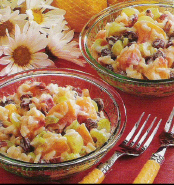

Fruity Rice salad
Makes 6 servings

Directions
- IN a mixing bowl, combine the first five ingredients; beat until smooth. Add the rice, peaches, grapes, celery and raisins; stir well. Cover and refrigerate for at least 6 hours. Just before serving, stir into he pecans.
https://baron-3dl.github.io/normans-kitchen/recipe/fruity-rice-salad.html